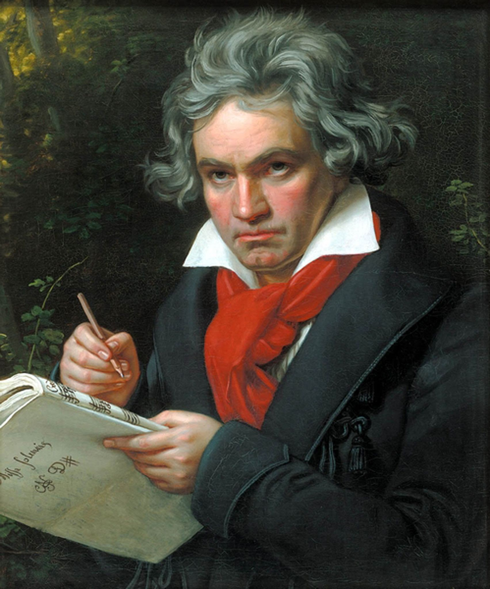

Timeline of Beethoven and his Symphonies
- Ludwig van Beethoven was born in Bonn in 1770.
- He begins playing the piano early on in his life.
- At 16 year old Beethoven meets Mozart in Vienna.
- In 1800, Beethoven's Symphony No. 1 premiers at the Vienna Burgtheater.
- In 1802, Beethoven moves to the Austrian village Heiligenstadt where he wrote parts of his Second and Third Symphonies.
- Beethoven was a supporter of the French Revolution in 1798 and Napoleon Bonaparte at the time.
- The world premiers of Symphonies No 5 and 6 were conducted in 1808. Author E.T.A. Hoffman wrote "Beethoven’s music moves the lever controlling horror, fear, dread, pain and awakens that infinite longing that is the essence of Romanticism'
- Musicians playing Symphony No. 7 and the Battle Symphony at it's premier in 1813 felt that Beethoven's music was hard to play.
- In 1815, Beethoven becomes joint guardian of his brother's son Karl. He did not see eye to eye with Karl's mother Johanna.
- In 1821, Beethoven was arrested as he got lost during a walk and was unrecognisable to police.
- In March 1827, Beethoven passed away. Around 20,000 people attended his funeral.

Ludwig van Beethoven
Notable things
- Beethoven composed around 750 pieces during his lifetime.
- His Symphony No. 3 "Eroica" was originally dedicated to Napoleon. When Napoleon declared himself emperor, Beethoven erased his name and dedicated the sumphony to "the memory of a great man".
- From the age of 26, Beethoven had problems hearing; for the last 7 years of his life he was almost entirely deaf while still composing music.
- Ludwig van Beethoven never learned how to multiply or divide.
- He was a daydreamer "“I was just occupied with such a lovely, deep thought, I couldn’t bear to be disturbed.”
List of Famous Works
Symphonies
Symphony No. 3, also called Symphony Eroica
Symphony No. 5, also called Fate Symphony
Symphony No. 6, also called Pastroal Symphony
Symphony No. 7, called "the apotheosis of dance" by R. Wagner
Symphony No. 9, the Choral Symphony
Piano
Piano Sonata No.14 "Moonlight" in C# minor
Bagatelle in A minor, WoO 59, Für Elise
Piano Converto No.5, 'Emperor'